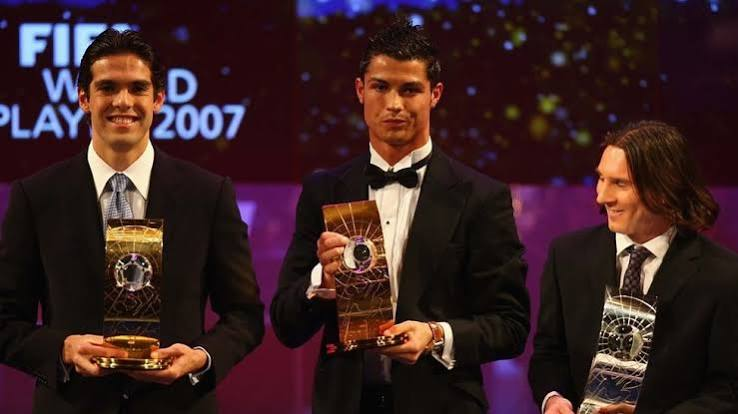

La final de la Champions se disputó el 23 de mayo de 2007 en Atenas frente al Liverpool. El Milan se impuso por 2-1, consiguiendo su séptima Copa de Europa. Kaká fue una pieza clave durante todo el campeonato y dio una asistencia en la final, demostrando una vez más su visión de juego y capacidad para decidir partidos importantes. Gracias a ese espectacular rendimiento, Kaká obtuvo el Balón de Oro con una amplia ventaja en la votación, superando a Cristiano Ronaldo y Lionel Messi. Con este logro se convirtió en el primer brasileño en ganar el premio desde Ronaldinho en 2005 y en el último futbolista en conquistarlo antes del dominio de Cristiano Ronaldo y Lionel Messi, quienes ganarían todas las ediciones siguientes entre 2008 y 2017.
